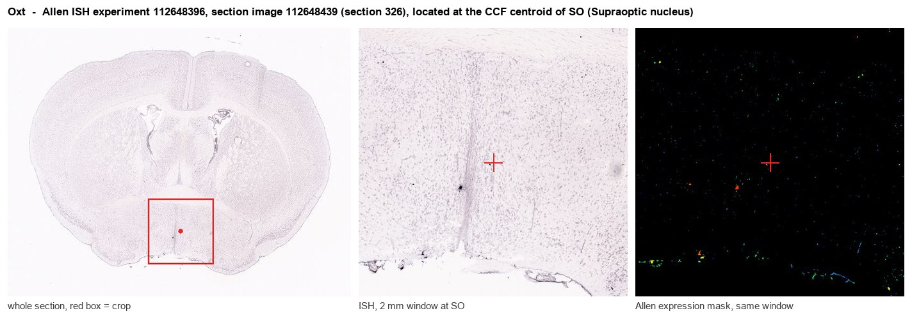
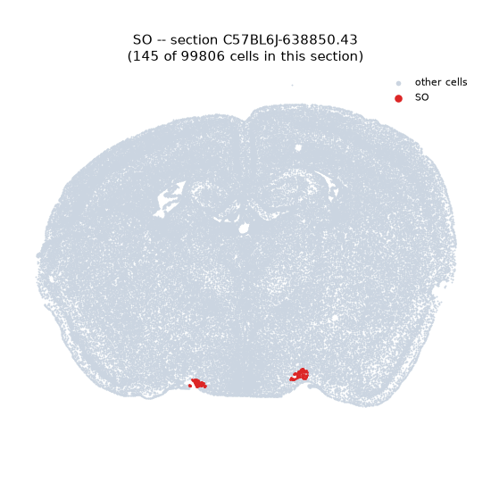
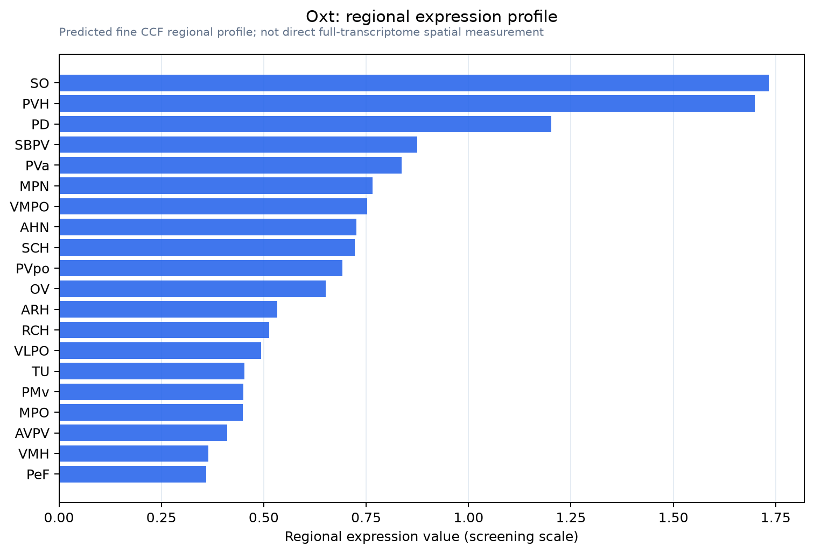

Oxt
Spatial tier: RESTRICTED · Class: NEUROMODULATORY_SIGNAL · Top region: SO (Supraoptic nucleus) · Positive regions: 18/554
47.1Discovery Score
42.4Targetability Score
CEvidence grade C
What this means: Oxt: fine CCF profile is restricted toward SO (top regions: SO, PVH, PD, SBPV, PVa; 18 positive regions); direct spatial validation is still required.
Function in SO: evidence, prediction, innovation
- Gene function
- Oxt encodes the oxytocin-neurophysin I precursor, cleaved to the nine-amino-acid neurohypophysial peptide oxytocin. Oxytocin acts on a single Gq-coupled receptor (OXTR) to mobilise intracellular calcium. Peripherally it drives uterine contraction and the milk-ejection reflex; centrally it modulates social recognition, maternal and sexual behaviour, feeding and stress reactivity.
- Region function
- The supraoptic nucleus sits over the optic tract and contains the magnocellular oxytocin and vasopressin neurons that project to the posterior pituitary; it is the principal source of circulating oxytocin and vasopressin and integrates osmotic, volaemic and reproductive signals.
- Published in this region
- direct Direct and extensive. Supraoptic magnocellular oxytocin neurons release peptide both from axon terminals in the neurohypophysis and somatodendritically within the nucleus itself, where it feeds back to synchronise the population into the bursting that drives milk ejection and parturition (Morris 2004; Kombian 2002; Brown 2020). Bealer 2010 reviewed the neurochemical control of magnocellular oxytocin release across gestation, and Widmer 2003 showed neurosteroid regulation of oxytocin release from the rat supraoptic nucleus; Knobloch 2014 traces the evolution and anatomy of these oxytocin pathways.
- Predicted function
- Prediction: work here is now confirmatory rather than exploratory. Cell-type-specific silencing of supraoptic oxytocin neurons should impair milk ejection and parturition, whereas selectively blocking somatodendritic release, for example by interfering with the astrocytic and retrograde machinery that gates it, should desynchronise the bursting without abolishing basal secretion. The open questions are which supraoptic subpopulations project centrally as opposed to to the pituitary, and how activity-dependent astrocytic retraction gates dendritic release.
- Innovation
- ★☆☆☆☆ 1/5 Oxytocin in the supraoptic nucleus is one of the most intensively studied gene-region pairs in neuroscience.
- Tools
- Oxt-IRES-Cre (JAX 024234) and Oxt-Cre mice, Oxt-Venus and Oxt-eGFP knock-in rats, Oxtr-Cre and Oxtr-Venus lines; OXTR antagonists atosiban and L-368,899 and agonists carbetocin and TGOT; validated anti-oxytocin/neurophysin antibodies (PS38); oxytocin-promoter AAVs (Knobloch/Grinevich) for magnocellular targeting; the OXTR sensor for release imaging.
- References
Direct evidence located at the region

Allen ISH experiment 112648396, section image 112648439 (section 326): the section that contains the CCF centroid of Supraoptic nucleus according to the Allen image-to-atlas alignment (reference_to_image), with a 2 mm window around that point. Left: whole section, red box = window. Middle: ISH signal. Right: Allen's expression-mask view of the same window. open this image in the Allen viewer
Look it up yourself: Allen Mouse Brain ISH for OxtAllen reference atlas: SO (structure 390)ABC Atlas MERFISH viewer(in the ABC Atlas choose dataset MERFISH-C57BL6J-638850-CCF, colour cells by gene "Oxt" or by parcellation_substructure "SO")All genes confined to SO + 3-D brain
Direct spatial evidence
MERFISH REGION LOCATOR

Regional expression figure

Predicted WMB × fine-CCF profile; not direct full-transcriptome spatial measurement.
Spatial profile
Evidence and specificity
- Evidence status
- PREDICTED_FINE
- Direct sources
- None; predicted localization only
- Exclusive threshold
- 12 positive regions out of 554
- Spatial specificity
- 0.401
- Top-region fraction
- 0.087
- Filter status
- PASS
Interpretation limits
- Cell-type-to-region projection is imputed expression, not direct spatial measurement.
- Adult reference atlases do not establish stability across age, sex, strain, state, or disease.
- Transcript abundance does not guarantee protein abundance or genetic-tool performance.